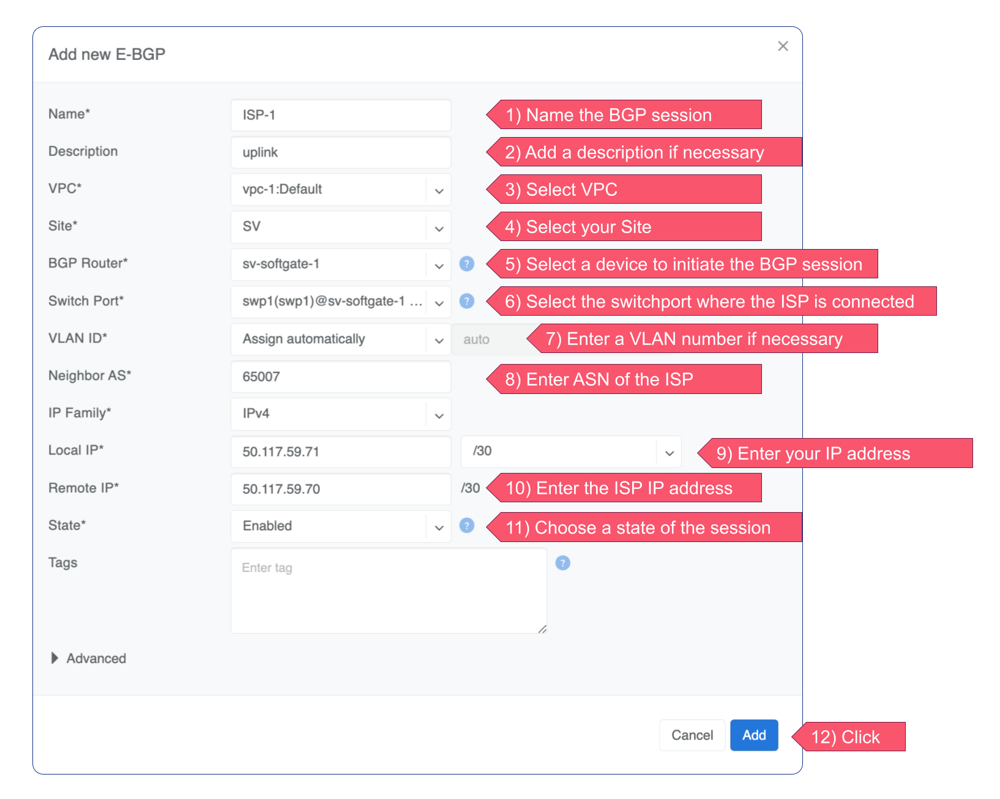
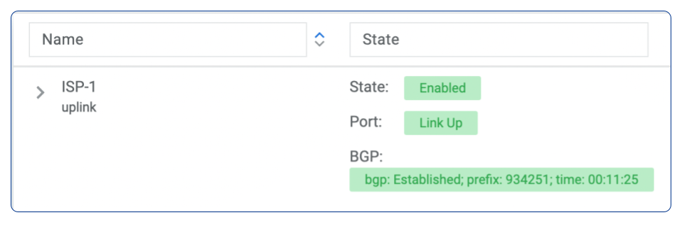
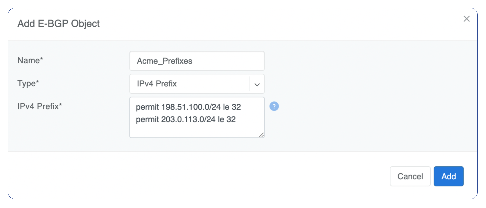
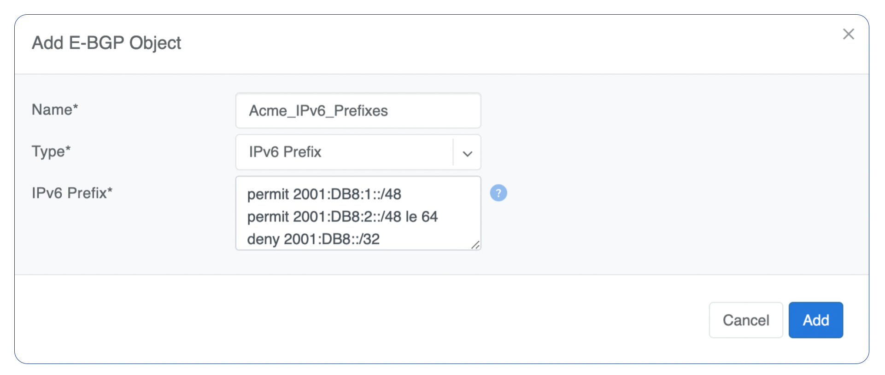
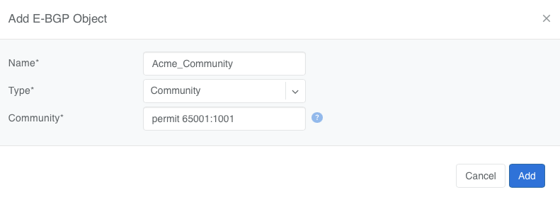
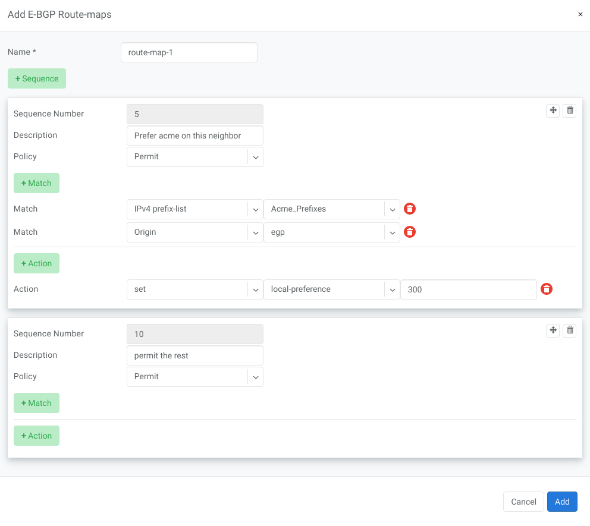
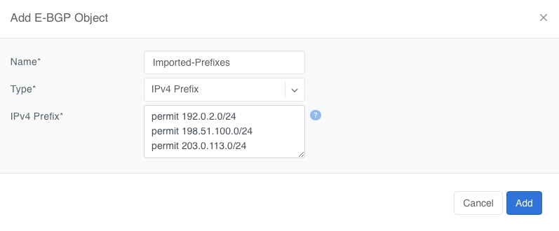
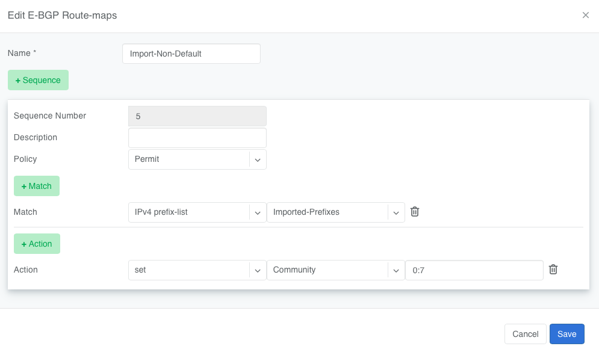
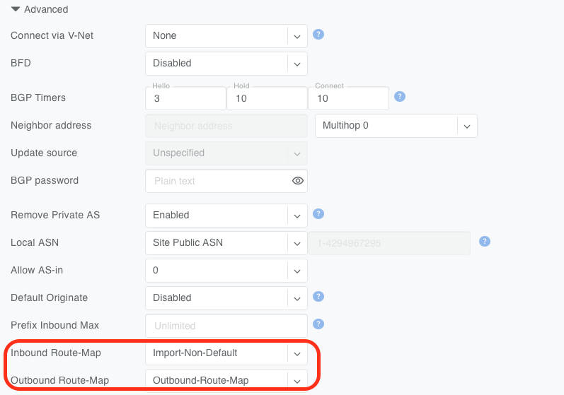

Join Slack
Join Slack
BGP
BGP Overview
Netris uses BGP to connect tenant VPCs and management networks to the world outside the Netris-managed fabric — upstream carriers, non-Netris-managed data center networks, WAN routers, and security appliances such as firewalls.
There are two main types of BGP-enabled connectivity:
SoftGate-terminated BGP — the session terminates on a SoftGate node. Typically used for connecting to ISPs, border routers, and similar upstream peers, since SoftGate also provides NAT and Layer-4 load balancing for that traffic.
:doc:`VPC Connect <vpc-connect>` (switch-terminated BGP) — the session terminates directly on a switch port or V-Net SVI. Typically used to establish line-rate connections to external gateways that don’t require NAT or L4LB as part of the connection.
Typical use cases are connecting the Netris-managed fabric to external networks such as WAN, non-Netris-managed parts of the data center network, Internet Service Providers, and similar external networks.
Basic BGP
BGP neighbors can be declared in the Network → E-BGP section. Netris software will automatically generate and program the network configuration to meet the requirements.
A BGP session with an external to the Netris-managed fabric neighbor is defined by two independent choices:
BGP Router — the switch (or SoftGate) that hosts the local BGP speaker and where the Netris-managed side of the session terminates.
Local endpoint interface — either a routed switch port or a V-Net gateway (SVI), selected by setting either Switch port or Connect via V-Net (under Advanced).
The peer-facing port can be any port on the Netris-managed fabric; it does not have to sit on the switch selected as the BGP Router. When the port and the BGP Router are on different switches, Netris connects the two automatically — it creates a dedicated SVI on the BGP Router switch and provisions a hidden (meaning not visible in the GUI under the V-Net menu) “virtual wire” V-Net to the switch where the peer is physically connected.
The resulting combinations:
Local endpoint |
Peer port on the BGP Router switch |
Peer port on a different switch |
|---|---|---|
Routed switch port |
The session and the port are on the same switch. |
Netris builds a virtual wire from the peer’s port to the SVI created on the BGP Router switch. |
V-Net gateway (SVI) |
The V-Net’s SVI on that switch is the local endpoint. |
The V-Net is extended to the BGP Router switch, and the SVI created there terminates the session. |
Adding BGP Peers
Navigate to Network → E-BGP in the web UI.
Click the Add button.
Fill in the fields as described in the table below.
Click the Add button.
Name |
User assigned name of BGP session. |
Description |
Free description. |
VPC |
Select the VPC to which the BGP session should belong. |
Site |
Select the site (data center) where this BGP session should be terminated on. |
BGP Router |
Define on which node the BGP session should be terminated. |
Switch port |
Switch Port where the physical cable to the BGP neighbor is connected (any port on the fabric). If terminating the BGP session on a V-Net (See Advanced>Connect via V-Net), this option is disabled and the switch port must be added to the V-Net rather than being selected here. |
VLAN ID |
Optionally tag with a VLAN ID (usually untagged). Disabled if terminating the BGP session on a V-Net (See Advanced>Connect via V-Net option below). |
Neighbor AS |
Autonomous System number of the remote side. (Local AS is defined in the Advanced section) |
IP Family |
IPv4 or IPv6. |
Local IP |
BGP peering IP address on Netris controlled side. |
Remote IP |
BGP peering IP address on the remote end. |
State |
Administrative state (Enabled/Disabled). |
Labels |
Tags associated with the BGP session. |
Advanced |
Advanced policy settings are described in the next section. |
Example: Declare a basic BGP neighbor.

If everything is correct, State, port and BGP will get green status.

Advanced BGP
BGP neighbor declaration can optionally include advanced BGP attributes and BGP route-maps for fine-tuning of BGP policies.
Click Advanced to expand the BGP neighbor add/edit window.
Connect via V-Net |
Select a V-Net if the BGP session is to be established with an endpoint from that V-Net rather than with the switch port directly. |
BFD |
Enable/Disable BFD. |
BGP Timers |
Keepalive (Hello) Interval, Hold Time and Connect Retry timers for the BGP session. Netris default values are 3 10 10. |
Neighbor address |
IP address of the neighbor when peering with the loopback IP address instead of the interface IP address (aka Multihop). |
Update source |
When Multihop BGP peering is used it allows the operator to choose one of the loopback IP addresses of the SoftGate node as a BGP speaker source IP address. |
BGP password |
Password for the BGP session |
Remove Private AS |
Strip private ASNs (64512-65534, or 4200000000-4294967294 for 4-byte ASNs) from the AS-PATH before advertising to this neighbor. Enabled by default. If multiple SoftGates advertise the same prefix to the same upstream, whether this is enabled or disabled affects whether their AS-PATHs end up identical or distinct. See the note below this table for more details. |
Local ASN |
The local Autonomous System Number the BGP speaker advertises for this session. Three options: Site Public ASN (default) - use the AS number defined as the public ASN in the current Site configuration. Switch Local ASN - if a switch is selected as the BGP Router for this session, use that switch’s individual local ASN. Not applicable when the BGP Router is a SoftGate. Custom ASN - enter a specific AS number for this session only. |
Allowas-in |
Define the number of allowed occurrences of the self AS number in the received BGP NLRI to consider it valid (normally 0). |
Default Originate |
Originate default route to the current neighbor. |
Prefix Inbound Max |
Drop the BGP session if the number of received prefixes exceeds this max limit. For switch termination maximum allowed is 1000 prefixes and SoftGate termination can handle up to one million prefixes. |
Inbound Route-Map |
Apply BGP policies described in a route-map for inbound BGP updates. |
Outbound Route-Map |
Apply BGP policies described in a route-map for outbound BGP updates. |
Local Preference |
Set local preference for all inbound routes for the current neighbor. |
Weight |
Set weight for all inbound routes for the current neighbor. |
Prepend Inbound (times) |
How many times to prepend self AS number for inbound routes. |
Prepend Outbound (times) |
How many times to prepend self AS number for outbound routes. |
Prefix List Inbound |
List of IP addresses prefixes to permit or deny inbound. |
Prefix List Outbound |
List of IP addresses prefixes to permit or deny outbound. |
Send BGP Community |
List of BGP communities to send to the current neighbor. |
Effect of Remove Private AS on prefixes advertised by SoftGate nodes to their upstream BGP neighbors:
Typically, all SoftGate nodes in a deployment share the same AS number.
All SoftGate nodes advertise all prefixes (locally originated as well as originated on other SoftGate nodes and subsequently learned through the fabric) to their upstreams.
When the Remove Private AS is switched on (check box is set), all inter-SoftGate path information is stripped from the AS PATH before the prefix is advertised upstream, thus each prefix will appear to the upstream BGP neighbor as equidistant (ECMP). As a result some traffic might be forwarded to SoftGates that would then have to forward it again to the “correct” SoftGate, thus resulting in suboptimal routing behavior and increased load.
With the Remove Private AS toggle set to off (check box is cleared), the AS PATH of each prefix will include the full list of ASN, including the list of ASNs of switches connecting SoftGates to each other. Because of this, on any given SoftGate locally originated prefixes will always have the AS PATH shorter than prefixes learned through the switch fabric from other SoftGates.
BGP Objects
IPv4 Prefix
IPv6 Prefix
AS-PATH
Community
Extended Community
Large Community
IPv4 Prefix
Action - Possible values are: permit or deny (mandatory).
IP Prefix - Any valid IPv4 prefix (mandatory).
Length - Possible values are: le <len>, ge <len> or ge <len> le <len>.
Example: Creating an IPv4 Prefix list.

IPv6 Prefix
Action - Possible values are: permit or deny (mandatory).
IP Prefix - Any valid IPv6 prefix (mandatory).
Keyword - Possible values are: le <len>, ge <len> or ge <len> le <len>.
Example: Creating an IPv6 Prefix list.

Community
Action - Possible values: permit or deny (mandatory).
Community string - Allowed format:
<permit/deny> LINE. LINE is AA:NN Community number in AA:NN format (where AA and NN are (0-65535)) orlocal-AS,no-advertise,no-export,internetoradditive.
Example: Creating community.

BGP route-maps
Sequence Number - Automatically assigned a sequence number. Drag and move sequences to organize the order.
Description - Free description.
Policy - Permit or deny the routes which match below all match clauses within the current sequence.
Match - Rules for route matching.
Type - Type of the object to match: AS-Path, Community, Extended Community, Large Community, IPv4 prefix-list, IPv4 next-hop, Route Source, IPv6 prefix-list, IPv6 next-hop, local-preference, MED, Origin, Route Tag.
Object - Select an object from the list.
Action - Action when all match clauses are met.
Action type - Define whether to manipulate a particular BGP attribute or go to another sequence.
Attribute - The attribute to be manipulated.
Value - New attribute value.
Example: route-map

eBGP Importing Non-Default Routes into a VPC
In multi-uplink deployments, SoftGate Hyperscale (SG-HS) nodes can be eBGP peered with different upstream networks.
By default, Netris SoftGates only redistribute the default route into tenant VPCs, regardless of what other prefixes they receive from upstream peers. This ensures a consistent routing table across all SoftGates, but can lead to suboptimal routing, where traffic from the VPC is always routed to the SoftGate receiving the default, even if another SoftGate has a better path via specific prefixes.
Starting with version 4.5.4, Netris introduces a mechanism to selectively import non-default routes into VPCs by tagging them with a special BGP community: 0:7. Routes marked with this community will be redistributed into tenant VPCs alongside the default.
Warning
Importing additional prefixes into VPCs increases the size of the routing table on SoftGates and switches. Ensure that your hardware can handle the increased load, especially if you plan to import many prefixes.
How to Import Non-Default Prefixes
You have two options for tagging the desired prefixes with the required 0:7 community.
Option 1: Tag Inbound in Netris (on SoftGate HS)
If you manage the eBGP peer configuration using the Netris Controller, you can mark specific routes for redistribution into tenant VPCs by tagging them with the special BGP community 0:7.
Create a Prefix List under Network → E-BGP Objects
Tip
Do not include 0.0.0.0/0 — it is automatically imported

Create a Route Map under Network → E-BGP Route-Maps
Add a new route-map that
Matches the prefix list created in Step 1
Sets the BGP community to
0:7

Attach the Route Map to the eBGP Peer under Network → E-BGP
Edit the relevant eBGP neighbor and under Advanced Settings, set the inbound route-map to the one created in Step 2

Once applied, any matching prefixes received from this eBGP peer will be tagged with community 0:7, making them eligible for redistribution into tenant VPCs by the SoftGate.
Tip
You can verify imported routes in the Looking Glass (Network → Looking Glass) section of the Controller UI.
Warning
When configuring an inbound route-map on an eBGP peer, an outbound route-map must also be set. If no outbound route-map is needed, create a dummy one that permits all routes without modification and attach it to the outbound direction.
Option 2: Tag Outbound from External BGP Peer
Alternatively, the external BGP speaker can set the 0:7 community on outbound updates before advertising routes to the SoftGate. This option does not require any configuration in Netris, as long as the incoming route already carries the community.
This is useful when the upstream router is under the customer’s control and managing policy from that side is preferred.